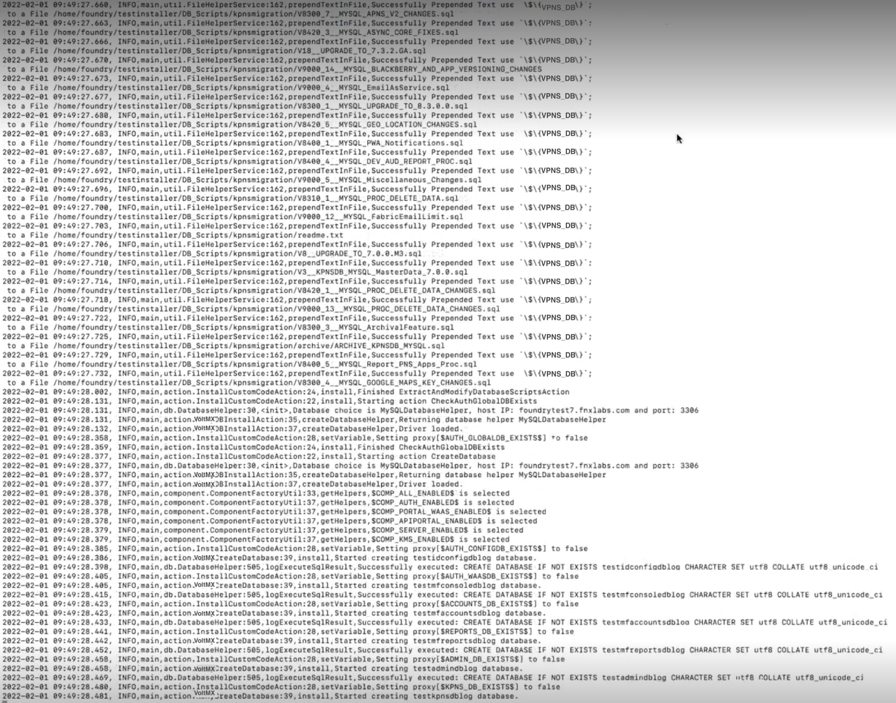
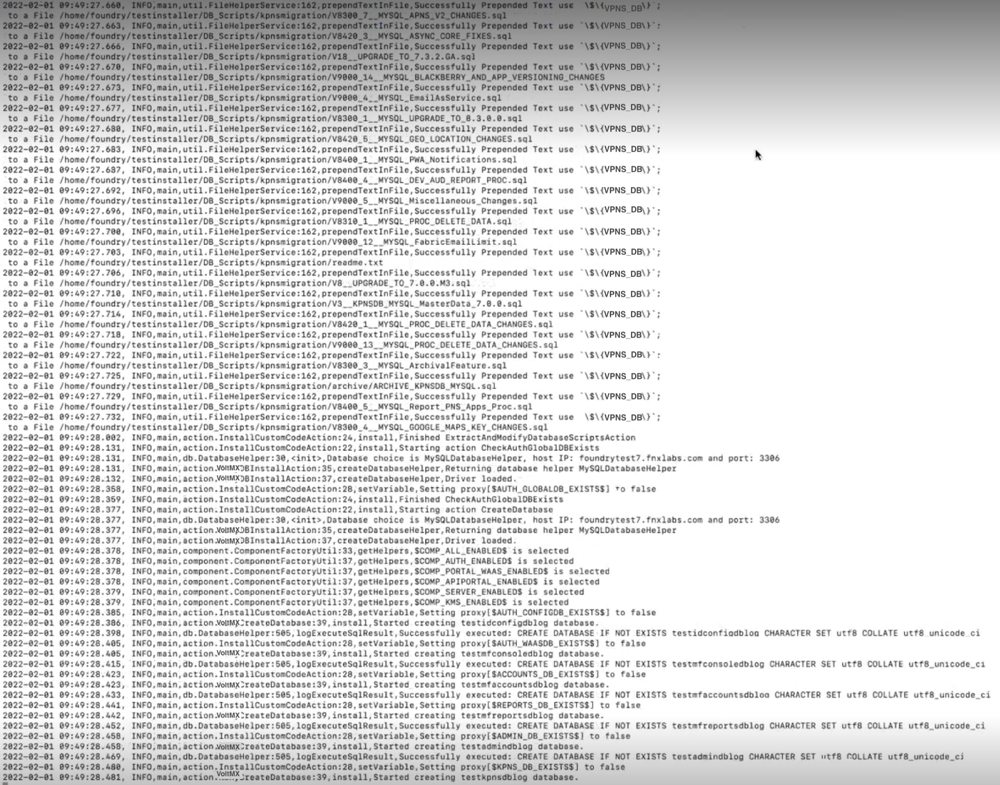

Installing Volt MX Foundry on a pre-configured Standalone JBoss¶
Volt MX Foundry can be installed on a pre-configured standalone (single node) JBoss. Before installing, ensure that you configure the existing standalone JBoss by using the manual steps provided in the Prerequisites > Configure the pre-configured Standalone JBoss.
Note: If a user installs Volt MX Foundry Console on a partition different from the user's home directory, the user must have read/write execute permissions.
Important: Ensure that you have the required hardware and access to the supporting software as mentioned in the Prerequisites section.
You must perform the steps noted in the Pre-installation Tasks section.
Make sure you have proper administrative rights to install Volt MX Foundry on your computer.
You also need a user where Volt MX Foundry will be installed.
The < Install Location > directory contains the log files logging each invocation of the installer. To make problem identification easier, provide these log files to Volt MX when reporting an issue.
Accessing the live installation logs while the installation is running
Note: "tmp" directory is available inside JBoss_Home location.
- During the installation, all the live logs will be created in the "tmp" directory, with the file name prefixed as "lax-" followed by timestamp. These are the two installation log files:
- lax-12347050814474460129-out.tmp
- lax-24487050814400678962-err.tmp

Note: These two files are important if there is any interruption to the installation, and due to which these files will not be merged into a single log file.
- Tailing live log files during installation:
To tail the live log files during installation, run the following command:
tail -f lax-12347050814474460129-out.tmp 
 
- Once installation is done, these two log files will be merged and stored in the installation directory, with the file name prefixed as "Volt_MX_Foundry_Install_" followed by timestamp.

- Reading log files once installation is completed:
To read the log files once installation is completed, run the following command:
vi Volt_MX_Foundry_Install_09_28_2021_23_02_07.log


To install Volt MX Foundry in pre-configured JBoss, follow these steps:
-
Execute the following command to switch to the user that you created.
# su - username -
Press Enter. The system prompt you to enter the password.
- Enter the password, and press Enter.
- Unzip the
VoltMXFoundrySetup.tar.gzfile, and navigate to the folder VoltMXFoundry_Installer_Linux. - Start the ./VoltMXFoundryInstaller-x.x.x.x.GA.bin file by executing the following command:
Preparing to install...
Extracting the JRE from the installer archive...
Unpacking the JRE...
Extracting the installation resources from the installer archive...
Configuring the installer for this system's environment...
Launching installer...
=======================
Volt MX Foundry (created with InstallAnywhere)
----------------------------------------------
Preparing CONSOLE Mode Installation...
==============================================
Introduction
-------------
This installer will install a new or upgrade an existing instance of Volt MX Foundry.
Volt MX Foundry is a set of enterprise-grade mobile infrastructure services that makes it easy to build amazing apps that integrate and support all of your backend systems. With open, standards-based development, scalable and secure services, and exceptional agility, enterprises can dramatically reduce the cost and complexity of enterprise mobility projects.
To proceed with installation, please confirm that the following prerequisites have been met -
a. Database server for installation. MySQL, MariaDB, Oracle, MS SQL Server are the supported databases. MariaDB is supported for Tomcat/JBoss only.
b. Corresponding database user should exist and that user should have all required privileges as per the documentation.
c. If you want to use your existing SSL certificate then please have the SSL certificate mapped to the domain name you want to use.
d. If you want to install with JBoss as an option for application
server, then have the application server preconfigured. Please note that single node JBoss is also bundled as part of the installer, in case you want to install afresh.
To change input, type 'back' to go back to the previous step.
To cancel the installation, type 'quit' at any time.
For troubleshooting & help on the installation, use
https://opensource.hcltechsw.
com/volt-mx-docs/docs/documentation/Foundry/installing_foundry.html.
For getting started on Volt Foundry, refer
https://opensource.hcltechsw.com/volt-mx-docs/docs/documentation/Foundry/voltm
x_foundry_user_guide/Content/Introduction.html.
If you have more questions or feedback, you can join our
community at https://support.hcltechsw.com/csm?id=volt_mx_support or raise a
support ticket at https://support.hcltechsw.
com/csm?id=sc_cat_item&sys_id=5d63dc0fdb0c60140104c59b139619c2.
->1- Continue with Installation.
2- Abort Installation.
ENTER THE NUMBER OF THE DESIRED CHOICE, OR PRESS <ENTER> TO ACCEPT THE DEFAULT:
- Press Enter. The Software License Agreement details appear.
===================
License Agreement
----------------
Installation and Use of Volt MX Foundry Console Requires Acceptance of the Following License Agreement:
VOLTMX, INC.
SOFTWARE LICENSE AGREEMENT
THE TERMS AND CONDITIONS CONTAINED HEREIN CONSTITUTE A LEGAL AGREEMENT.
THIS AGREEMENT ("AGREEMENT") CONTAINS THE ENTIRE AGREEMENT BETWEEN YOU ("LICENSEE") AND VOLTMX, INC. ("VOLTMX") WITH RESPECT TO THE TERMS AND CONDITIONS DESCRIBED HEREIN. READ THIS AGREEMENT CAREFULLY BEFORE YOU CLICK THE "I ACCEPT" BUTTON BELOW. BY CLICKING ON THE "I ACCEPT" BUTTON, YOU ACKNOWLEDGE THAT (1) YOU ARE AUTHORIZED TO ENTER THIS AGREEMENT FOR AND ON BEHALF OF YOUR COMPANY, AND ARE DOING SO, AND (2) YOU HAVE READ AND UNDERSTAND AND AGREE THAT YOU AND THE COMPANY SHALL BE BOUND BY THESE TERMS AND CONDITIONS AND ALL MODIFICATIONS AND ADDITIONS PROVIDED FOR. IF YOU DO NOT AGREE WITH THESE TERMS AND CONDITIONS, CLICK ON THE "I DO NOT ACCEPT" BUTTON BELOW AND INSTALLATION WILL TERMINATE.
DO YOU ACCEPT THE TERMS OF THIS LICENSE AGREEMENT? (Y/N): Y
- Press Enter to continue with new installation.
The following installation types are supported for new installation:
- Production for the production instance.
- Non-Production for larger environments like QA or UAT.
- Development for single machine instance.
===============
Licensing Type
--------------
Please select the type of environment you want to install. Development – Single server instance typically used for development Non-Production – A multi-server environment for testing or staging environments Production – A full production-grade environment
1- Production
2- Non-Production
->3- Development
ENTER THE NUMBER FOR YOUR CHOICE, OR PRESS <ENTER> TO ACCEPT THE DEFAULT::
- Enter your choice and press Enter. The_Send Usage Data Anonymously_details appear. Allows HCLto collect product usage information to make your Volt MX Foundry experience better. HCLdoes not save any of your private or application data.
============================
Send Usage Data Anonymously
----------------------------
Help us make your Volt MX Foundry experience better by allowing us to collect product usage information. We will not save any of your private or application data.
Send usage data anonymously.
->1- Yes
2- No
ENTER THE NUMBER FOR YOUR CHOICE, OR PRESS <ENTER> TO ACCEPT THE DEFAULT::
- Enter your choice and press Enter. The Install Components details appear.
===================
Install Components
------------------
Please select Volt MX Foundry components to install.
The Console is the administrative interface to manage your apps, environments and users.
The Identity Services helps you to use a single gateway for all your authentication and authorization requests.
The Integration Services helps you connect with any enterprise or third-party system to expose, transform and orchestrate your data as APIs.
The API Developer Portal is a console that enables partner teams to discover, test and consume APIs.
Engage your app users over sms, email and push using segmentation, location, campaigns and event driven messaging.
A specialized component used to manage offline data synchronization between the backend system of record and the front-end app.
Console, Identity and Integration Services are mandatory components of Volt MX Foundry.
In a development scenario, all components can be installed on the same server. However, it is recommended to install these components on separate servers for a production environment.
->1- Console
->2- Identity Services
->3- Integration Services
->4- API Development Portal
->5- Engagement Services
ENTER A COMMA-SEPARATED LIST OF NUMBERS REPRESENTING THE DESIRED CHOICES, OR PRESS <ENTER> TO ACCEPT THE DEFAULT::
- Console - To install Volt MX Foundry Console, type 1 and press Enter.
The system creates the following databases:
<prefix>mfconsoledb<suffix>,<prefix>mfaccountsdb<suffix>, and<prefix>mfreportsdb<suffix>. - Identity Services - To install VoltMXIdentity Services, type 2 and press Enter.
The system creates the following database:
<prefix>idconfigdb<suffix>. - Integration Services - To install Volt MX Foundry Integration, type 3 and press Enter.
The system creates the following databases:
voltmxadmindbandmfreportsdb. - API Developer Portal - To install developer portal, type 4 and press Enter.
Note: During installation if you have selected API Developer Portal, the API Developer Portal is created. You can directly access your VoltMXDeveloper Portal in Volt MX Foundry Console.
-
Engagement Services - To install Volt MX Foundry Engagement Services, type 5 and press Enter. The system creates the following database:
<prefix>vpnsdb<suffix>.Reports Database
The reports database is used for configuring reports.
The Installer creates the
mfreportsdbif you choose either Console or Integration Services:- Console without Integration Services (with or without Engagement Services)
- Console and Integration Services (with or without Engagement Services)
- Integration Services without Console (with or without Engagement Services)
Reports Database for Integration on a Separate Node:
While installing console and integration on separate nodes, the installer prompts you to point the reports database during the integration installation.
For example:
You have installed only Console on one node. The installer creates these three databases such as
<>mfreportsdb<>along with the<>mfconsoledb<>and<>mfaccountsdb<>. For example, your report database name isvoltmxmfreportsdb1When you install the integration with or without one or more components (identity, or Engagement Services) on a separate node, the installer displays the Reports Database Name field in the Database Details window. If the installer prompts you to enter the existing reports db, enter the reports database name (for example,
voltmxmfreportsdb1) in the Database Details window > Reports Database Name field.Refer to creating a reports database, for example : <prefix>mfreports<suffix>.
- Press Enter to continue the installation. The Install Folder details appear.
=====================
Install Folder
---------------------
Please choose a destination folder for this installation.
NOTE: The installation path should not contain any special characters.
Default Install Folder: /home/user1/VoltMXFoundry
ENTER AN ABSOLUTE PATH, OR PRESS <ENTER> TO ACCEPT THE DEFAULT :
Note: By default, Volt MX Foundry is installed at the home directory of the user.
- Press Enter to continue the installation. The installer prompts for the_Application Server_details as follows:
===================
Application Server
------------------
Enter requested information
->1- Tomcat
2- JBoss
ENTER THE NUMBER FOR YOUR CHOICE, OR PRESS <ENTER> TO ACCEPT THE DEFAULT::
- In the Application Server,type two and press Enter.
- Press Enterto continue the installation. The Installation Mode details appear.
==================
Installation Mode
-----------------
Please select required installation mode.
Standalone mode is a single node deployment typically used for development and testing environments.
Domain mode is a high availability multiple node deployment typically used for production environments. For domain mode install, you will need a preconfigured JBoss cluster.
Note: If you are running JBoss in Domain node for a production setup, please procure appropriate licenses from Red Hat, Inc.
->1- Standalone Mode (Single Node)
2- Standalone Mode (Existing)
3- Domain Mode (Multi Node)
ENTER THE NUMBER FOR YOUR CHOICE, OR PRESS <ENTER> TO ACCEPT THE DEFAULT::2
Important: To install Volt MX Foundry on single-node on JBoss that is bundled with the Volt MX Foundry installer, choose 1- Standalone Mode (Single Node). For more details, refer to Standalone Mode (Single Node) Installation.
To install multinode, choose 3- Domain Mode. Before installing domain mode, ensure that the JBoss cluster is configured on your install system. For more details, refer to Multinode Installation Procedure.
- In the Installation Mode, type 2 and press Enter.
- The Application Server details will appear with the following details if have selected All Components or Volt MX Foundry Console at Install Components.
===========================
Application Server Details
--------------------------
Please enter the details of preconfigured standalone JBoss. The default value is IP address of this machine.
Hostname/IP Address should not be 127.0.0.1, 0.0.0.0 or localhost. It should be a public IP address or a fully qualified domain name (FQDN).
Fully Qualified Public URL of Volt MX Foundry with HTTP Management Port
(Default: ):
Hostname/IP Address (Default: test201):
Native Management Port (Default: 9999):
HTTP/HTTPS Port (Default: 8080):
User Name (Default: master):
- In the Application Server Details details, do the following:
-
Fully Qualified Public URL of Volt MX Foundry: Enter Load balancer URL to use public communication. For example,
<http/https>://<hostname>:<http/https port>. -
Hostname/IP Address: Enter public Hostname/IP of JBoss node. The node should be accessible from your installation system.
-
Management Port: Enter native port of JBoss master node.
-
HTTP/HTTPS Port: Enter port of Volt MX Foundry Console.
- User Name: Enter user that you configured in node of JBoss.
- Type the password of the JBoss user.
- Press Enter. The Database Choice details appear:
=================
Database Choice
-----------------
Please select the database provider of your choice.
->1- MySQL 5.7
2- MySQL 5.7 Cluster - Group Replication
3- Oracle 19c (19.3.0)
4- SQL Server 2017
5- MariaDB 10.3. 13
ENTER THE NUMBER FOR YOUR CHOICE, OR PRESS <ENTER> TO ACCEPT THE DEFAULT::
- In the Database Choice ,choose the DB:
- In the Database Choice if you select 1, the MySQL Database Details appear.
==========================
MySQL Database Details
--------------------------
Please enter MySQL database server details
Database Server IP (DEFAULT: localhost): <IP address>
Port (DEFAULT: 3306):
Username (DEFAULT: ): root
a. Enter the following details:
- Database Server IP: Enter the server Hostname/IP to be used to create a database of selected components of Volt MX Foundry. By default, the server Hostname/IP is set as localhost.
- Port: Enter the database port of the MySQL Server. By default, this field is set to 3306 for MySQL.
- Username: Enter the user name used while creating the database user - for example, dbclient.
b. Provide a password and press Enter.
- If the database connection fails, the following error message displays.
===========================
Database Connection Failed
---------------------------
Database connection failed.
For the following reasons: Communications link failure
The last packet sent successfully to the server was 0 milliseconds ago. The driver has not received any packets from the server.
PRESS <ENTER> TO ACCEPT THE FOLLOWING (OK):
- If the database server not compatible, the following error message displays:
======================================
Incompatible Database Server Version
------------------------------------
Minimum requirement for MySQL database server is 5.7.
PRESS <ENTER> TO ACCEPT THE FOLLOWING (OK):
- In the Database Choice if you select 2, the Oracle Database Details appear.
==========================
Oracle Database Details
--------------------------
Please enter Oracle database server details.
Database Server Hostname/IP (Default: 10.10.24.51): <Hostname/IP>
Port (Default: 1521):
Service ID / Service Name(Default: ):
System Username (Default: ):
a. Enter the following details:
- Database Server IP: Enter the server Hostname/IP to be used to create a database of selected components of Volt MX Foundry. By default, the server Hostname/IP is set as localhost.
- Port: Enter the database port of the Oracle Server. By default, this field is set to 1521 for oracle.
-
Service ID / Service Name: Enter Oracle service ID or service name. Service ID is unique alias given to an instance name of Oracle DB.
-
System Username: Enter the user name used while creating the database user.
b. Press Enter. The installer prompts for Enter Password for Database User details as follows:
====================================
Enter Password for Database User
-------------------------------------
Please enter the password:
c. Provide a password and press Enter.
- If the database connection fails, the following error message displays.
============================
Database Connection Failed
----------------------------
Database connection failed.
For the following reasons: Communications link failure
The last packet sent successfully to the server was 0 milliseconds ago. The driver has not received any packets from the server.
PRESS <ENTER> TO ACCEPT THE FOLLOWING (OK):
- If the database server not compatible, the following error message displays:
======================================
Incompatible Database Server Version
------------------------------------
PRESS <ENTER> TO ACCEPT THE FOLLOWING (OK):
d. Select the tablespace for Oracle database:
Important: If tablespaces were already created, the DBA must grant quota (permissions) on these tablespaces to installer with admin option.
The DBA also must include grant quota on the schemas from installer login.
=====================
Tablespace Choice
---------------------
Please select the Table Space type
->1- Default Tablespace
2- User Defined Tablespace
ENTER THE NUMBER FOR YOUR CHOICE, OR PRESS <ENTER> TO ACCEPT THE DEFAULT::
- Default Tablespace: If selected, the database schema and SQL scripts migration happens automatically to the default tablespace - for example,
USERS - User Defined Tablespace: If selected, enter the tablespaces for the following:
=========================
Ask for the Tablespaces
-------------------------
Please enter the names of the Tablespaces
Data Tablespace (Default: ): VoltMX123
Index Tablespace (Default: ):
LOB Table Space (Default: ):
- Data Tablespace:
Enter the name for Data tablespace.
This is a mandatory field. If the Data tablespace field is empty, the installers displays the error message:
====================================
TableSpace details not provided
------------------------------------
Please provide a valid Tablespace for at least the Data field for the installation wizard to proceed further. PRESS <ENTER> TO ACCEPT THE FOLLOWING (OK):
If the Data tablespace (for example, VoltMX123) does not exist, the installers displays the error message:
========================================================================
Invalid TableSpace Details
---------------------------------------
Installation wizard is not able to access the VoltMX123 TableSpace provided with give credentials. Please verify the details again. PRESS <ENTER> TO ACCEPT THE FOLLOWING (OK):
- Index Index Tablespace: Enter the name for Index tablespace. If input for Index Tablespace is not provided, then the value will be set to the provided Datatable space value.
-
LOB Tablespace: Enter the name for LOB tablespace. If input for LOB Tablespace is not provided, then the value will be set to the provided Datatable space value.
-
In the Database Choice if you select 3, the SQL Server Database Details appear.
============================
SQLServer Database Details
-----------------------------
Please enter SQL database server details.
Database Server Hostname/IP (Default: 10.10.24.51): <Hostname/IP>
Port (Default: 1433):
Username 9Default: ):
Instance Name (Optional) (Default: ):
a. Enter the following details:
- Database Server IP: Enter the server Hostname/IP to be used to create a database of selected components of Volt MX Foundry. By default, the server Hostname/IP is set as localhost.
- Port: Enter the database port of the SQL Server. By default, this field is set to 1433 for SQL.
- Username: Enter the user name used while creating the database user - for example, dbclient.
- Instance Name (Optional): Enter the instance name for the database. This information is optional. b. Press Enter. The installer prompts for Enter Password for Database User details as follows:
===================================
Enter Password for Database User
------------------------------------
Please enter the password:
c. Provide a password and press Enter.
- If the database connection fails, the following error message displays.
===========================
Database Connection Failed
--------------------------
Database connection failed.
For the following reasons: Communications link failure
The last packet sent successfully to the server was 0 milliseconds ago. The driver has not received any packets from the server.
PRESS <ENTER> TO ACCEPT THE FOLLOWING (OK):
- If the database server not compatible, the following error message displays:
=======================================
Incompatible Database Server Version
---------------------------------------
PRESS <ENTER> TO ACCEPT THE FOLLOWING (OK):
- In the Database Choice if you select 5, the MariaDB Database Details appear.
===========================
MariaDB Database Details
-----------------------------------------
Please enter MariaDB database server details.
Database Server Hostname/IP (Default: 10.10.24.51): <Hostname/IP>
Database Port (Default: 1433):
Database Username (Default: ):
Instance Name (Optional) (Default: ):
=====================================
Enter Password for Database User
-------------------------------------
Please enter the password:
c. Provide a password and press Enter.
- If the database connection fails, the following error message displays.
================================
Database Connection Failed
--------------------------------
Database connection failed.
For the following reasons: Communications link failure
The last packet sent successfully to the server was 0 milliseconds ago. The driver has not received any packets from the server.
PRESS <ENTER> TO ACCEPT THE FOLLOWING (OK):
- If the database server not compatible, the following error message displays:
=======================================
Incompatible Database Server Version
-----------------------------------
PRESS <ENTER> TO ACCEPT THE FOLLOWING (OK):
- Press Enter. The installation prompts for Database name prefix and suffix details as follows:
================================
Database name prefix and suffix
-------------------------------
Please enter database name prefix and suffix. Please provide existing prefix and suffix if you intend to upgrade to the new Volt MX Foundry Database.
Database Name Prefix (Default: voltmx): tomcat
Database Name Suffix (Default: 1): 54
- Database Name Prefix: Enter valid prefix databases - for example, Volt MX.
- Database Name Suffix: Enter valid suffix for all databases - for example, 1.
- Enter the prefix and suffix for the database and press Enter. The_Administrator Account Configuration_details appear.
The Administrator Account Configuration details help you to configure your super administrator account.
The Administrator Account Configuration window appears only while installing Console and Identity Services along with one or all other Volt MX Foundry components such as Integration Services, and Engagement Services on Tomcat or JBoss on a single node. You can select the components at Install Components.
===================================
Administrator Account Configuration
------------------------------------
Please configure your Administrator Account. We require your First Name, Last Name, Email Address and Password. Your Name is used for display purposes in the console, the Email address will be used as your login ID and we do not use it to send unsolicited emails.
Public URL (Default: ):
First Name (Default: ):
Last Name (Default: ):
Email (Default: ):
a. In the Administrator Account Configuration, enter the following details to create the administrator account.
-
Public URL: The URL field is filled with required details, for example.
<Hostname/IP address>:<port>. Change these details, if required. -
First Name: Enter the first name of the user.
-
Last Name: Enter the last name of the user.
-
Email: Enter the email address of the user. It can include alphanumeric and special characters that follow standard email address form.
Note: During Volt MX Foundry installation if you have configured your super administrator account, you can directly log in to Volt MX Foundry Console.
b. Press Enter. The Password for the Administrator Account details appear.
=========================================
Password for the Administrator Account
-----------------------------------------
Please Enter the Password:
Confirm Password for the Administrator Account Configuration
Please Enter the Password:
c. Enter the admin log-in password and press Enter. The Confirm Password for the Administrator Account Configuration details appear.
=============================================================
Confirm Password for the Administrator Account Configuration
--------------------------------------------------------------
Please Enter the Password:
- Re-enter the admin log-in password and press Enter. The_VoltMX Foundry server startup_ details appear.
=========================================
Volt MX Foundry server startup details
------------------------------------------
Do you want to start the Volt MX Foundry server after successful installation of Volt MX Foundry
->1- Yes
2- No
ENTER THE NUMBER FOR YOUR CHOICE, OR PRESS <ENTER> TO ACCEPT THE DEFAULT::
- To start the server automatically after the successful installation of Volt MX Foundry, press Enter.
Note: To start the server manually after the successful installation of Volt MX Foundry, refer to Starting Volt MX Foundry Console.
The Pre-Installation Summary details appear.
===========================
Pre-Installation Summary
---------------------------
Please review the following before continuing:
Install Components::
Console, Identity Service and Integration Service
Install Folder:
/root/VoltMXFoundry
Application Server:
<App Server>
Application Server Details:
<Hostname/IP Address>
Database Choice:
<database>
Database Details:
<IP address>
Database Names:
voltmxidconfigdb1, voltmxmfconsoledb1 & voltmxmfaccountsdb1
PRESS <ENTER> TO CONTINUE:
- Type the details and press Enter. The _Ready To Install_details appear.
====================
Ready To Install
--------------------
Installer is now ready to install Volt MX Foundry Console onto your system at the following location:
/home/user1/VoltMXFoundry
PRESS <ENTER> TO INSTALL:
- Press Enter to continue the installation.
================
Installing...
-----------------
[==================|==================|==================|==================] [------------------|------------------|------------------|------------------]
- Press Enter.The Installation Complete details appear.
=========================
Installation Complete
-----------------------------------------
Congratulations. Volt MX Foundry has been successfully installed to:
/home/user1/VoltMXFoundry
Console URL: https://00.00.00.00:port/mfconsole
Identity Service URL: https://00.00.00.00:port/authService
Integration Service URL: https://00.00.00.00:port/admin
Engagement Services URL: http://00.00.00.000:port/vpns
PRESS <ENTER> TO EXIT THE INSTALLER: \[user1@cnt6-01c downloads\]$
- Press Enter to complete the installation. After the installation is completed, the installer creates logs in the install folder
Important: When you are using a third party tool (for example, PuTTY) for installing Volt MX Foundry remotely, if any network connection issues occur at the end of the installation, the installer stops the installation and the installation log is not created.
Important: After installing Volt MX Foundry, import your SSL certificate (for example, domain.subdomain.crt) into your Volt MX Foundry installer's JRE trusted certificate authority (CA) certificates file - for example,
<INSTALL_DIR>/jre/lib/security/cacerts
If your SSL certificate is not configured, the system displays an error - for example, "peer not authenticated".
For details, refer to Troubleshoot with SSL Certificate Issues.
Note: You can now access Volt MX Foundry Console by using the URLs. For more details, refer to Accessing Volt MX Foundry Console - On-premises.

During installation if you have configured your super administrator account, you can directly log in to Volt MX Foundry Console by using the Console URL.